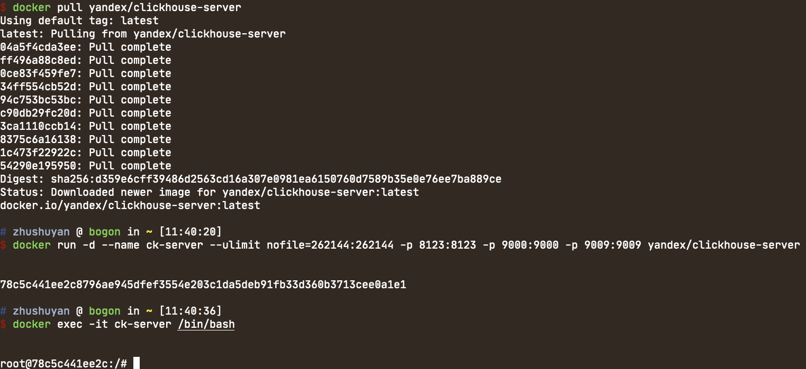

docker
docker pull yandex/clickhouse-server
docker run -d --name ck-server --ulimit nofile=262144:262144 -p 8123:8123 -p 9000:9000 -p 9009:9009 yandex/clickhouse-server
docker exec -it ck-server /bin/bash
clickhouse-client #进入数据库

建库、建表、建测试数据（均为本地测试）
create database statics engine=Ordinary;
use statics;
create table mysql_slow_log (
id UInt16,
user_name String,
host String,
sql String,
rows_examined UInt16,
exec_time UInt16,
query_time String,
create_time date
)engine=MergeTree(create_time, (id), 8192);
insert into mysql_slow_log (user_name, host, sql, rows_examined, exec_time, query_time, create_time) values('xiaoming', '127.0.0.1', 'select * from music', 3000, 1587021607, '0.333', '2020-04-16 15:32:17');